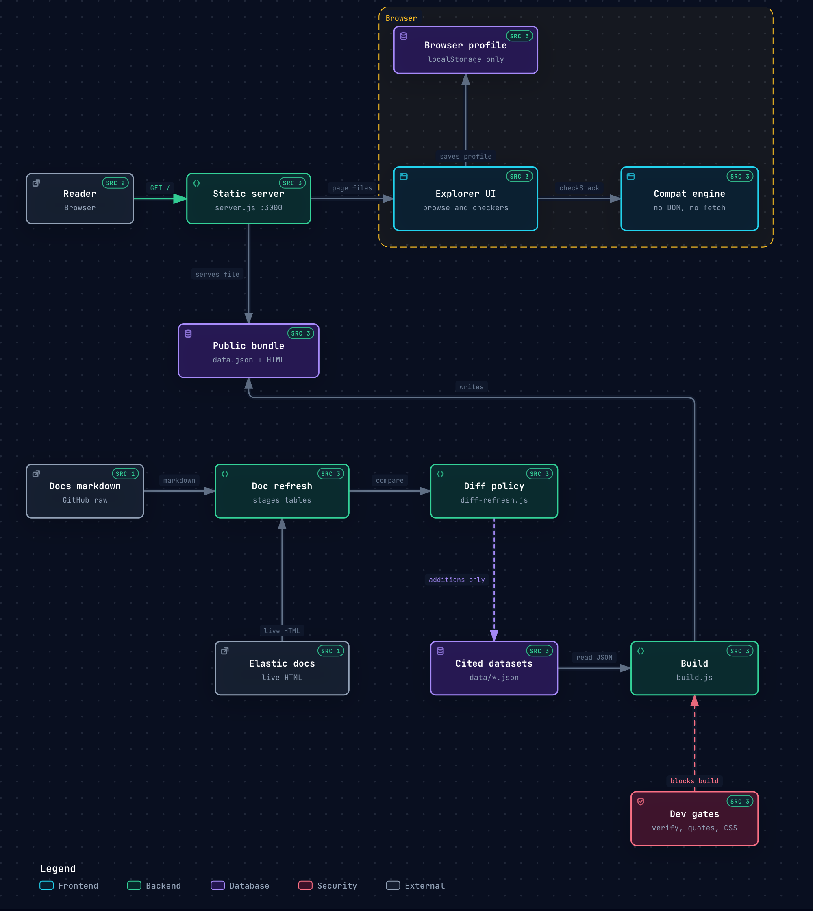

Elastic APM agents · EDOT / OpenTelemetry · Synthetics — consolidated into one searchable explorer, with three checkers that take your setup and report where the gaps are. Every value is a verbatim transcription of an Elastic documentation page, and every row links back to the exact page and anchor it came from.
How the scraped data, the cited rules engine, the three checkers and the refresh pipeline fit together. Generated with archify.

The whole explorer in one file — data, CSS and JS inlined. Open it locally, no install required. Attached to the latest release.
git clone then npm run dev. Zero runtime dependencies —
plain Node ≥ 18.
The engine holds no compatibility knowledge of its own. All 40 rules carry the documentation sentence that justifies them, and a build gate asserts every quote appears verbatim in the scraped data — a rule cannot cite text that isn't on a page we actually read. Seven combinations Elastic does not document are declared as such and reported as Not documented rather than given a verdict.
elastic/opentelemetry. Their data is valid but drift
in them is not detected.